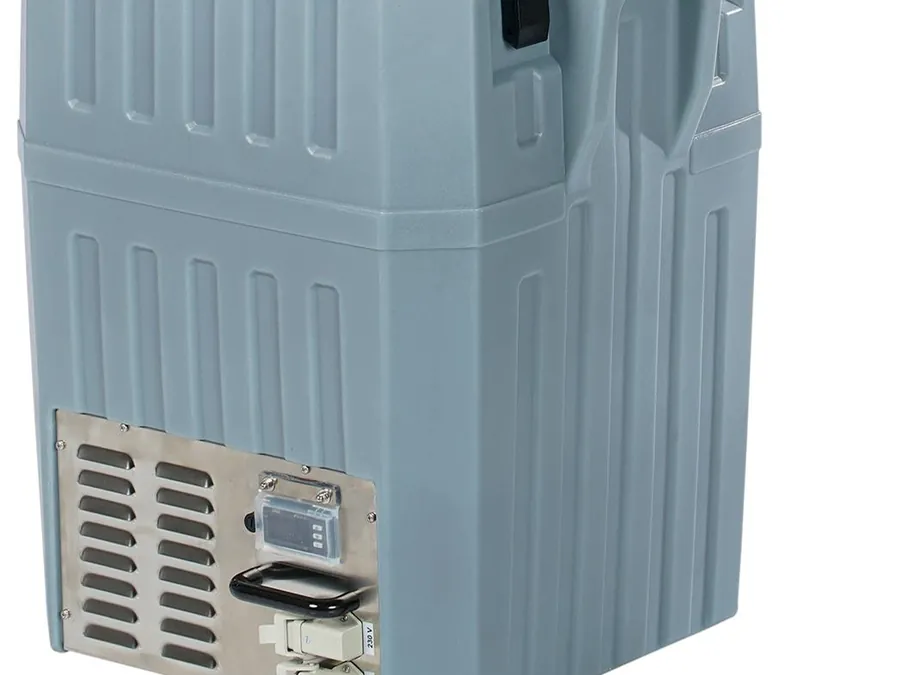

Préleveurs · Portables
TP5 CPréleveur portable réfrigéré à pompe péristaltique
Le préleveur portable de terrain à pompe péristaltique, asservi à un débitmètre, à un événement ou au temps. En version isotherme ou réfrigérée, il conserve les échantillons conformément à la réglementation.
- Volume
- 10 ml à 10 l
- Précision
- < 5 % ou ± 5 ml
- Flaconnage
- 1 × 10 l à 24 × 1 l
- Normes
- ISO 5667-10 · EN 16479
Idéal pour
- Bilans 24 h
- Campagnes de mesure
- Gros volumes
- Asservissement au débit
- Flacons en verre
LeasingDisponible à l’achat ou en leasing, par mensualités. Comment ça marche
Points forts
La pompe péristaltique en version portable : de petits volumes aux échantillons de 10 l.
- 10 ml à 10 lUn très large choix de volumes d’échantillon.
- Isotherme ou réfrigéréDouble paroi de 40 mm, enceinte réfrigérée en option.
- Pompe péristaltiqueL’échantillon ne touche que le tuyau.
- Flacons en verreJusqu’à 24 flacons de 1 l en verre ou en PE.
- Sur batterie ou secteurBatterie 12 V intégrée en isotherme, secteur ou batterie auxiliaire en réfrigéré.
- Normes de prélèvementConforme ISO 5667-10 et EN 16479.
Principe de mesure
Les galets de la pompe péristaltique écrasent le tuyau en tournant et poussent l’échantillon vers le flacon : le liquide ne touche que le tuyau.
12 programmes utilisateur, prélèvement en fonction du temps, du débit ou d’un événement, et prélèvement manuel à tout moment sans interrompre le programme.
- Hauteur d’aspiration de 6,5 m, 8 m en option
- Vitesse d’aspiration > 0,5 m/s jusqu’à 5 m
- Programmes sauvegardés jusqu’à 5 ans
Applications
Pour les échantillonnages d’eaux usées sur le terrain.
- Bilans 24 hÉchantillons asservis au débitmètre, conservés au froid.
- Campagnes en réseauPrélèvements mono ou multi-flacons sur plusieurs points.
- Analyses complètesGrands volumes jusqu’à 10 l par échantillon.
- Prélèvement sur événementDéclenchement sur contact ou à intervalle de temps.
Caractéristiques
Tête de commande avec base isotherme ou enceinte réfrigérée.
| Principe | Pompe péristaltique |
|---|---|
| Volume d’échantillon | 10 à 10 000 ml |
| Précision | < 5 % ou ± 5 ml |
| Hauteur d’aspiration | 6,5 m, 8 m en option |
| Tuyau | PVC, 5 m, Ø intérieur 10 mm, lest inox ; 20 m au maximum |
| Asservissement | 1 à 9 999 contacts par échantillon |
| Flacons | 1 × 10 l, 1 × 25 l, 2 × 13 l, 4 × 5 l, 16 × 1 l, 24 × 1 l en PE ; 24 × 1 l en verre |
| Coffret | PE/PC, double paroi, isolation 40 mm, IP65 |
|---|---|
| Entrées | 1 analogique 0/4-20 mA, 2 TOR |
| Alimentation | Batterie 12 V 10 Ah ; secteur ; batterie externe 12 V 90 Ah |
| Autonomie | Jusqu’à 2 000 échantillons par charge ; environ 49 h en réfrigéré sur batterie 90 Ah |
| Dimensions | Isotherme 787 × 510 × 468 mm, 25 kg · réfrigéré 1 028 × 550 × 468 mm, 40 kg |
| Interface | Mini-USB, RS422, RS232 ; Ethernet en option |
| Normes | CE, ISO 5667-10, EN 16479 |
Téléchargements
Questions fréquentes
Les questions que nous posent le plus souvent les exploitants et les bureaux d’études.
Le TP5 C fonctionne-t-il sur batterie ?
Oui en version isotherme, sur sa batterie 12 V intégrée. La version réfrigérée demande le secteur ou une batterie auxiliaire de 12 V.
Quels volumes peut-il prélever ?
De 10 ml à 10 l par échantillon, avec une précision inférieure à 5 % ou ± 5 ml.
Peut-on utiliser des flacons en verre ?
Oui, 24 flacons de 1 l en verre, en plus des configurations en PE.
Quelle différence avec le TP5 P ?
Le TP5 C prélève par pompe péristaltique, jusqu’à 10 l. Le TP5 P prélève par pompe à vide, de 20 à 350 ml.